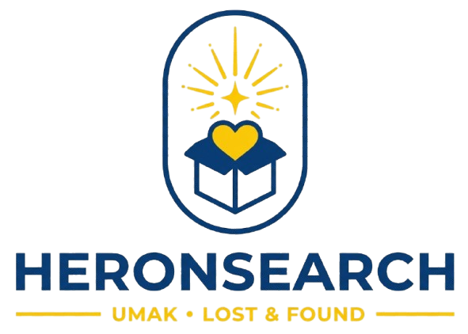

<header class="navbar">
  <a href="dashboard.html"></a>
  <nav class="nav-links">
    <a href="dashboard.html">Home</a>
    <a href="lost-items.html">Lost Items</a>
    <a href="found-items.html">Found Items</a>
    <a href="report-lost.html" data-match="report-lost.html report-found.html">Report Item</a>
    <a href="profile.html" class="nav-icon" aria-label="Profile">
      <svg class="icon" viewBox="0 0 24 24"><circle cx="12" cy="12" r="10"/><circle cx="12" cy="10" r="3"/><path d="M7 20.662V19a2 2 0 0 1 2-2h6a2 2 0 0 1 2 2v1.662"/></svg>
    </a>
  </nav>
</header>